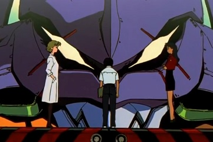 Episódio 1: |
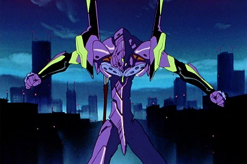 Episódio 2: |
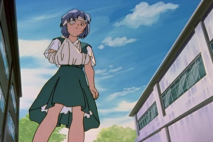 Episódio 3: |
Episódio 4: |
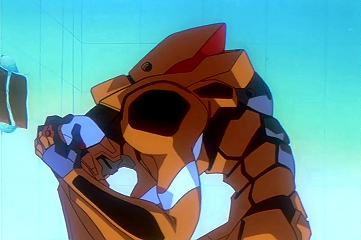 Episódio 5: |
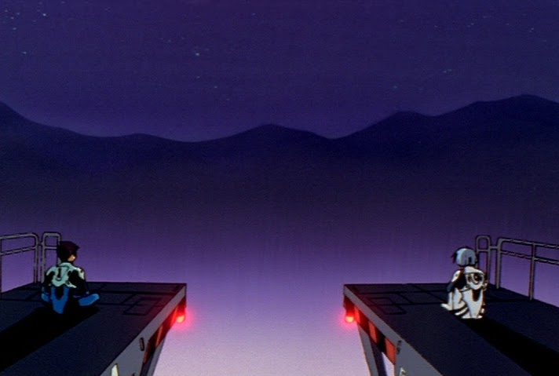 Episódio 6: |
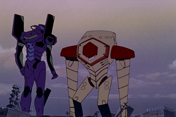 Episódio 7: |
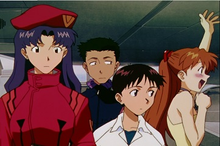 Episódio 8: |
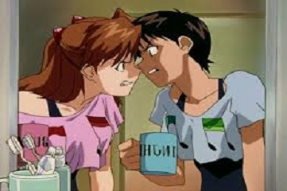 Episódio 9: |
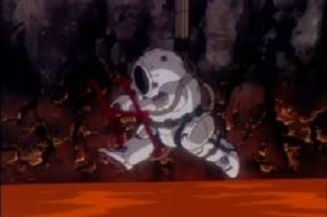 Episódio 10: |
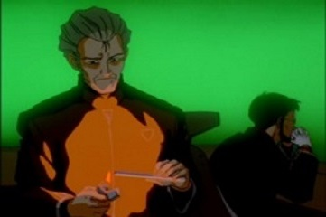 Episódio 11: |
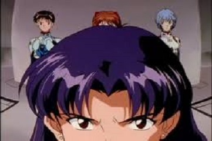 Episódio 12: |
Episódio 13: |
Episódio 14: |
Episódio 15: |
Episódio 16: |
Episódio 17: |
Episódio 18: |
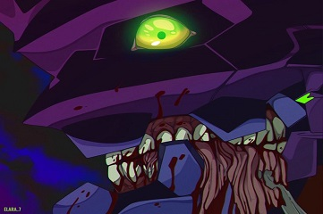 Episódio 19: |
Episódio 20: |
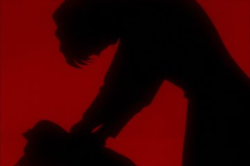 Episódio 21: |
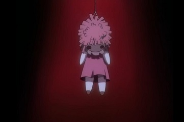 Episódio 22: |
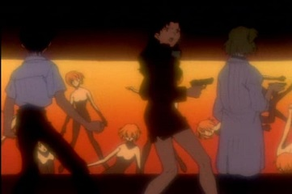 Episódio 23: |
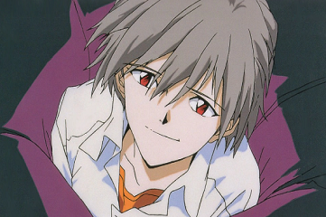 Episódio 24: |
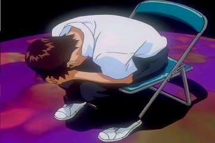 Episódio 25: |
 Episódio 26: |